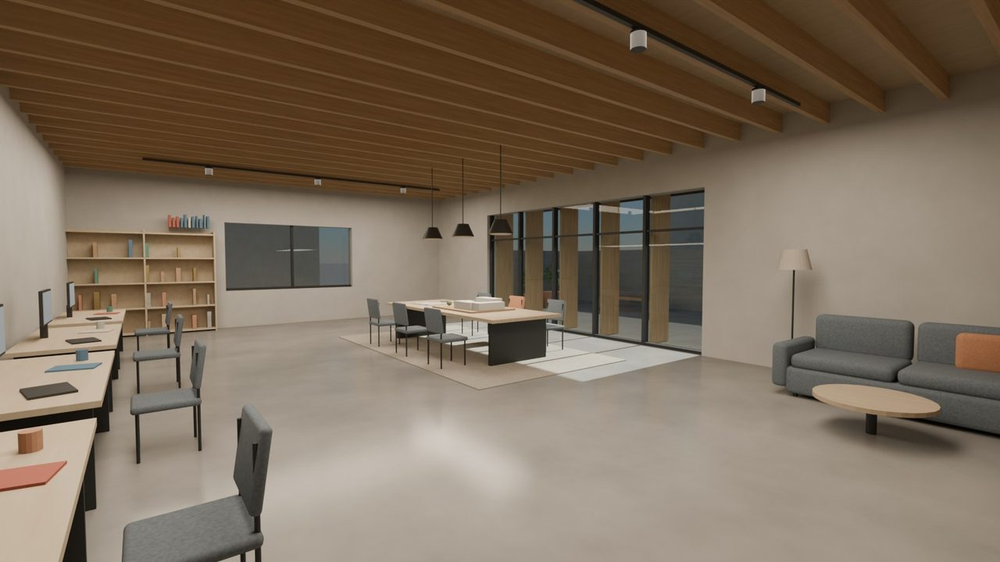

Barchinet World
Barchinet World is a Research Labs prototype of a network of online architecture offices. It needs JavaScript to run its interactive story: explore the world, enter the Los Angeles pilot office, run an instant daylight and shade check, send a simulated request and follow the handoff to a specialist.
All offices, people and projects in it are fictional. Please enable JavaScript to explore.
